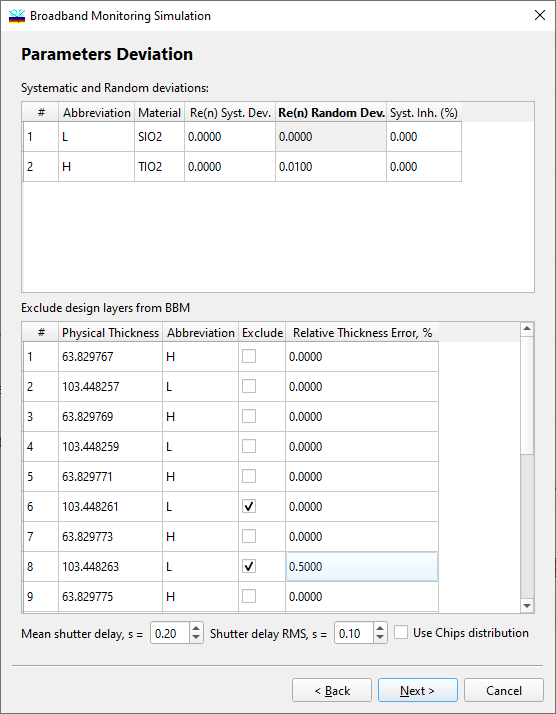

Broadband Monitoring Simulation - Parameters Deviations
Broadband Monitoring Simulation - Parameters Deviations
Navigation: OptiLayer Menu Commands > Analysis Menu > Broadband Monitoring Simulation >
Broadband Monitoring Simulation - Parameters Deviations
` <broadmonsim_deprates.html>`__ ` <broadbandmonitoringsimulatio.html>`__ ` <broadmonsimul_monitsystem.html>`__

At the second step, it is possible to specify deviations of refractive indices of layer materials (both systematic and random ones) and the level of systematic inhomogeneity of design layers. If it is necessary to consider a complex difference in refractive index from the theoretical one, it is possible to specify a different material from the Layer Material database for the same design abbreviation.
In the middle part of the dialog, it is possible to exclude some design layers from the Broadband Monitoring procedure. In some cases, it may be desirable to monitor specific layers using other methods, such as by time or with the help of quartz crystal monitoring. The RMS Relative Thickness Error column allows you to specify the level of errors for these supplementary types of monitoring.
It is also possible to specify the Mean shutter delay value and Shutter delay RMS, which also affect the quality of the deposition process. See also: